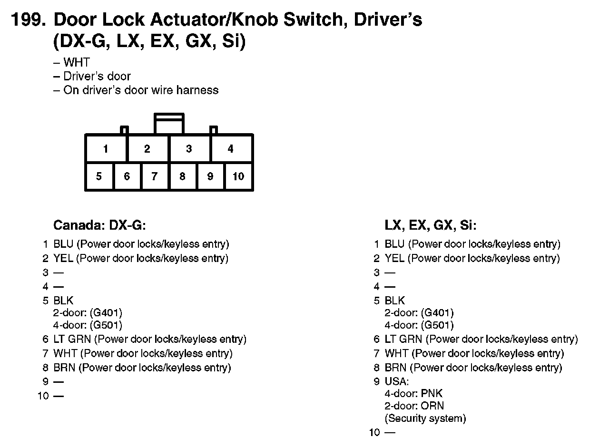
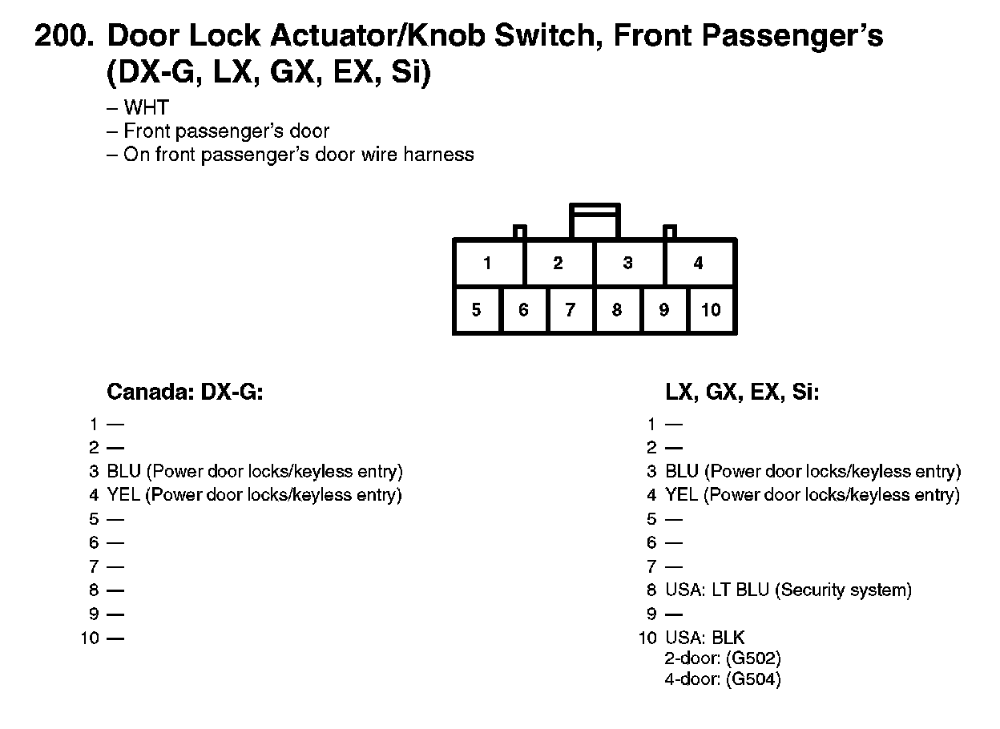
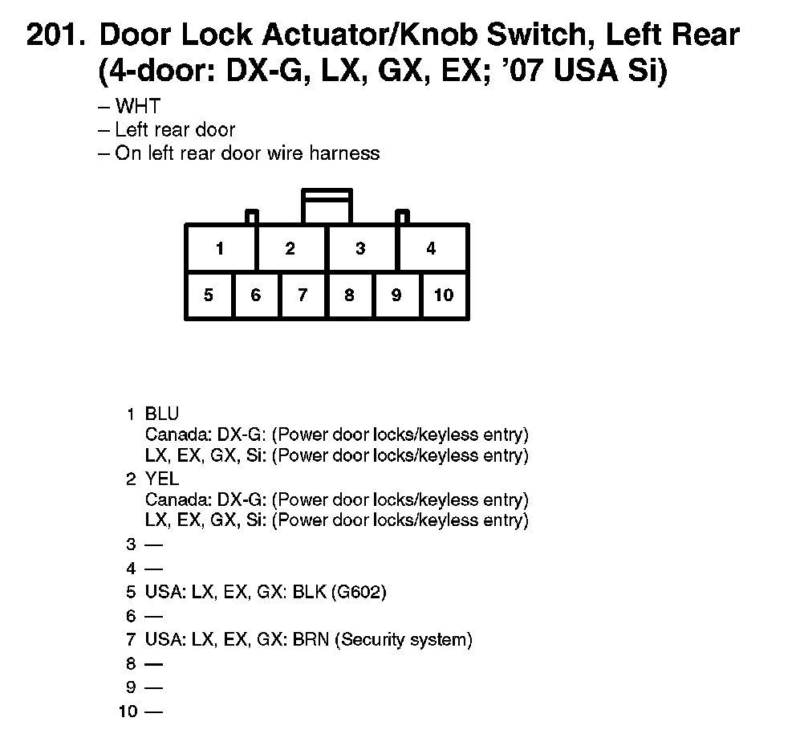
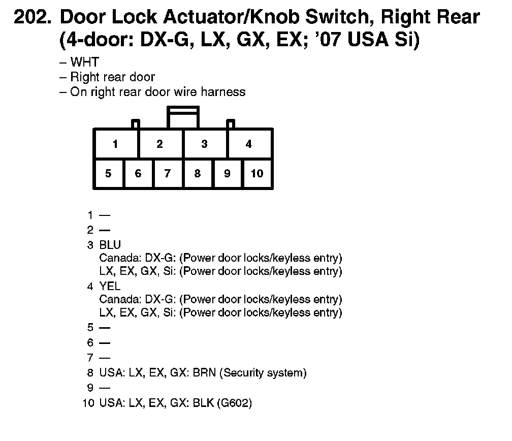

Power Door Lock Switch
199. Door Lock Actuator/Knob Switch, Driver's (DX-G, LX, EX, GX, Si):

200. Door Lock Actuator/Knob Switch, Front Passenger's (DX-G, LX, GX, EX, Si):

201. Door Lock Actuator/Knob Switch, Left Rear (4-door: DX-G, LX, GX, EX; '07 USA Si):

202. Door Lock Actuator/Knob Switch, Right Rear (4-door: DX-G, LX, GX, EX; '07 USA Si):
